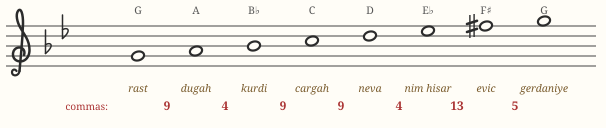
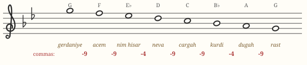
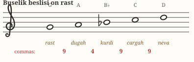
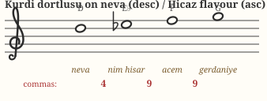
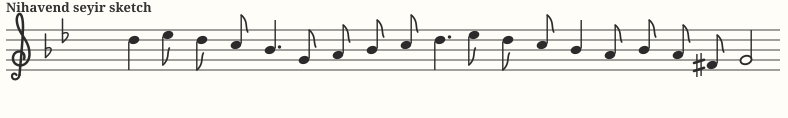
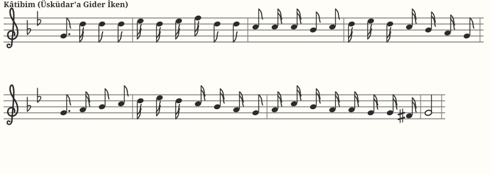

Chapter 06 · second makamMakam Nihavend
Named after the Persian city of Nahāvand, Nihavend is the makam that will feel most familiar: to a Western ear it is nearly a G minor that learned Ottoman manners. Urbane, romantic, a little melancholy — it dominates late-Ottoman and early-Republic popular song.
Identity card
| Tonic (durak) | rast — written G |
|---|---|
| Dominant (güçlü) | nevâ — D, the 5th degree |
| Leading tone (yeden) | F♯ (bakiye) below the tonic |
| Construction | Bûselik beşli on rast + Kürdî dörtlü on nevâ (descending); the ascent often sharpens toward a Hicaz color on nevâ |
| Seyir direction | descending–ascending (inici-çıkıcı) |
| Key signature |  B♭ + E♭ (küçük mücenneb flats) B♭ + E♭ (küçük mücenneb flats) |
The scale
Rising, Nihavend behaves like a harmonic/melodic minor: the seventh is raised to F♯ so it can lead into the tonic's octave:

Falling, the raised seventh is abandoned — like natural minor — giving the descent its characteristic softness through F♮ and E♭:

The two genera


The lower Bûselik pentachord (9·4·9·9) is exactly a Western minor fifth-span; the upper Kürdî tetrachord (4·9·9) supplies the descending E♭–F♮ color. When ascending melodies want tension, the upper region borrows a Hicaz-type sound — E♭ pulling to F♯ — before resolving; you can hear that pull at the top of the ascending scale clip.
Seyir: how Nihavend moves
Nihavend usually enters around the güçlü (nevâ), not the tonic: a phrase circles D, colors it with E♭, sinks through the Bûselik pentachord, then rebuilds upward before the final descent onto rast — approached through the F♯ leading tone. This “start in the middle, end at the bottom” shape is the inici-çıkıcı character.

Play it yourself
A live Nihavend instrument at exact pitch. Play it from the home row A S D F G H J K L ; ' of your computer keyboard, or click and hold the on-screen keys.
Thick border = tonic · double border = güçlü · dashed = yeden. Try Kâtibim's opening yourself: hold S, then H H H H J H G H. For the ascending leading-tone pull, play K → L (F♯ → gerdaniye).
Repertoire to listen for
| Piece | What it is |
|---|---|
| “Kâtibim (Üsküdar'a Gider İken)” — traditional İstanbul türküsü | The world-famous Istanbul song; a textbook Nihavend melody that begins on the güçlü and descends to rast, exactly as the seyir prescribes. |
| “Biz Heybeli'de Her Gece Mehtaba Çıkardık” — Yesâri Âsım Arsoy | Island nostalgia in Nihavend; a staple of every fasıl evening. |
| Nihavend longas and sirtos | Fast instrumental dance pieces (Kevser Hanım's Nihavend Longa is the most famous) — Nihavend at its most playful. |
Hear it: Kâtibim (Üsküdar'a Gider İken)
The song you asked for. Here is the vocal melody from the standard notation (SymbTr corpus): it enters exactly where Nihavend's seyir says — on the güçlü nevâ — circles it with nim hisar (E♭), sinks through the Bûselik pentachord, and cadences on rast through the raised F♯:
